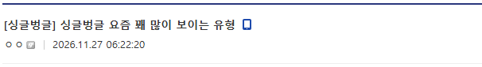
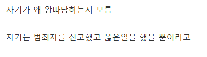

신호위반 안하면 운전 못하는것도 아니고 ㅋㅋㅋㅋㅋ
아까 젠슨 황이 일반인도 아닌데 첩을 두는 게 무슨 상관이냐고 적으니까
[그럼 돈 많으면 음주운전이나 강간도 해도 되냐?]고 한 새끼가 생각나네
그런 부류들이 있음.
왜?? 내가 뭐 틀린말했어? 내 말이 맞잖아?
딱 이런 스텐스.
나 숙소원룸쪽 골목에 차가 엄청 많아서 1층에 식당에 손님들이 도로 양옆으로 불법주차를 해야함
그러다보면 황색선까지도 넘어서 횡단보도에도 주차를하는데 여기까지는 나도 그러려니하는데
ㅈ도 보면 바짝 붙여서 주차해놓으려는 시도도 안한 미친놈들 보임 지 내리기 편하려고 그럼 바로 신문고 신고함
걍 어그로빠는 주작썰 숏폼 같은데 ㅋㅋ
주작썰 숏폼 맞긴함. 근데 그냥 글쓴이가 저런 류의 사람이 많이 보인다는게 글의 목적인거 같음
법의 기원은 도덕이라고 생각하면 좀 쉬움..
이게 잘 모르는 애들이 가장 많이 하는 착각이자 국가가 만들어 주입한 신화임
세상에 자연법이 있었을진 모르겠고, 그 자연법이 국가의 법의 기원일 수도 있었겠지만, 본질적으로 국가의 법과 자연법/도덕은 대립하는 관계지 뭐 최소한의 도덕이 국가의 법 이건 개소리임.
미안타...한 15년전에 배웠던거라 허헣
난 법이 모두가 함께 살아가기위해 사회최저한을 보장하는거고
공평이 아닌 포용에 의의를 두고 있다고 생각함
논리로 압살?하는 타입...
합법적인 개새끼
평소에 자존감이 워낙 박살이 나 있으니, 왜곡된 정의감에 젖어서 설치는거지.
팩트로 압! 쌀! 하는 애들 ㅋㅋㅋ
'아량'이란 단어가 뭔지 좀 알아야 할 듯
자경단한다고 무조건 지가 옳은 줄 아는 눈치없는 새끼들이 꼭 있음 ㅋㅋㅋ
어휴 등신 ㅋㅋㅋㅋ
대안은주지않고 무조건반대만하는사람들 피곤혀
사람답게 살지 못하면 왕따 당하는거지 지능이슈..
운전으로 생계 이어가는 신호위반 트럭기사들 이해좀 해줘라